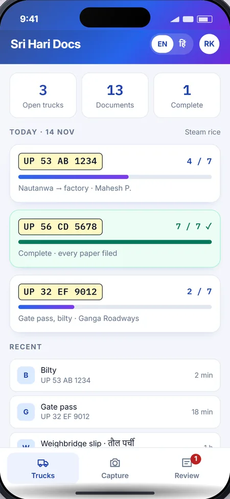

Industry · Logistics
Software for logistics and transport
Paperwork capture, vehicle records and dispatch tools that work from a phone.
- Delivered
- Sri Hari Docs, for an agri-trading company
- Devices
- Android app and installable web app
- Languages
- Hindi and English
- Where
- Remote, worldwide. India, UTC+5:30
Proof, not promises. Real screens from products we delivered.

Every open truck
The yard at a glance: each open truck and how many of its seven papers are in.
Sri Hari Docs case study ›
The right truck, with reasons
Each open truck is scored against the slip: same driver +3, same transporter +2, same date +3.
Sri Hari Docs case study ›
Fields read, with confidence
Printed weights read high. A handwritten name in fading ink reads low.
Sri Hari Docs case study ›When this fits
Trucks arrive with a bundle of paper slips, and each slip goes to a different desk.
Finding every paper for one truck means asking several people.
What we build
- Paperwork capture from a phone camera, at the gate or in the yard.
- A record for each vehicle, with every paper attached to it.
- Matching of each slip to the right truck by driver, transporter and date.
- Screens in the language your staff use. The delivered app works in Hindi and English.
- Dispatch and tracking tools shaped around how your yard already works.
How we work
Seven steps from idea to handover: idea, strategy, design, development, testing, launch and handover. You get a written scope and a fixed quote before any work starts, and nothing is released without your approval.
Questions
Have you built logistics software before?
Yes. Sri Hari Docs was delivered in May 2026 for an agri-trading company. It photographs truck papers, reads the fields and files each one to the right truck.
Will it work on the phones our staff already have?
The delivered app runs as an Android app and as an installable web app, so it also opens in a browser.
Bring the idea. We reply within a day.
Document reading and data extraction › Android app development › All services